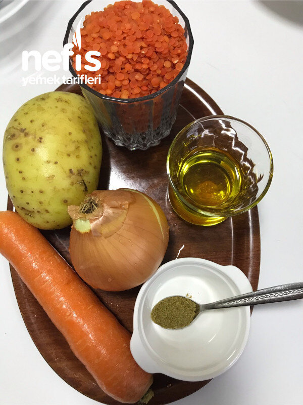

🍽️ 6-8 kişilik⏱️ Hazırlık: 10 dk🔥 Pişirme: 10 dk🏷️ Çorba Tarifleri
Malzemeler
- 1 adet patates
- 1 adet soğan
- 1 adet havuç
- 1 bardak mercimek
- Yarım çay bardağı zeytinyağı
- Yarım çay kaşığı kimyon
- Tuz,
- Yarım kaşık domates salçası
- Yarım kaşık biber salçası
- Yarım tatlı kaşığı kuru nane
- 6-7 bardak su
Hazırlanışı
- Patates, havuç, rondodan geçirilir.
- Mercimekle birlikte tencereye konur.
- 6-7 bardak su ilave edilir.
- 2-3 kaşık kadar sıvı yağ ve kimyon da ilave edilir.
- Benim düdüklü tencerem fissler.Düdüklünün iki çubuğu çıkınca 3 dakika pişirmek yetiyor.
- Salçalı yağ hazırlanır:Yağ, salça ve nane biraz kavrulur.
- Tencereye ilave edilir.
- Çorba blenderden geçirilir.
- Birkaç dakika birlikte kaynatılır, tuzu ayarlanır.